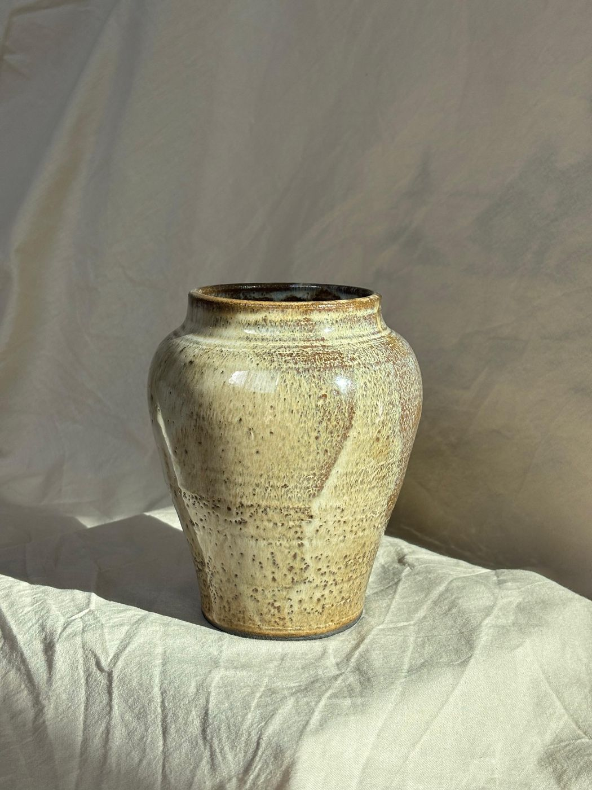
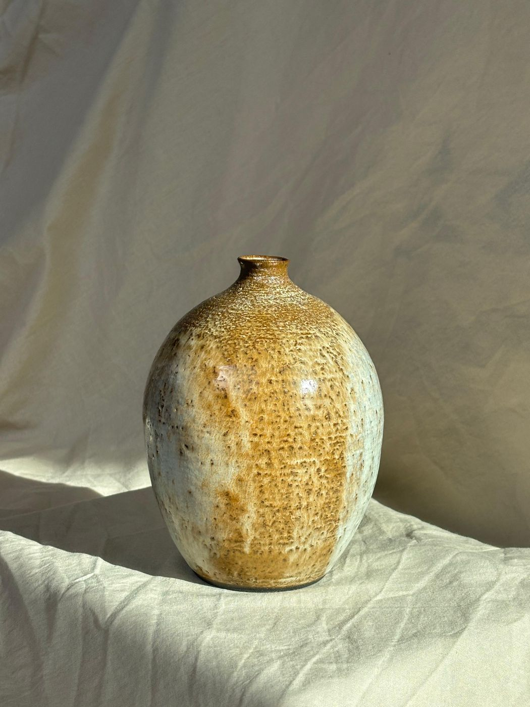
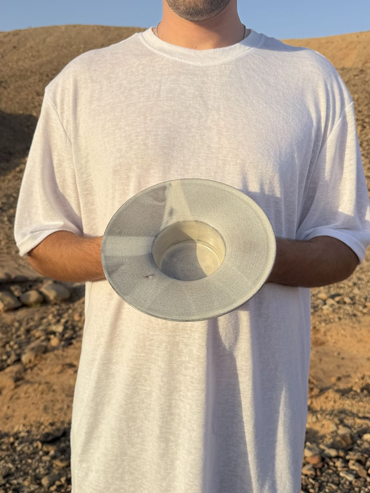
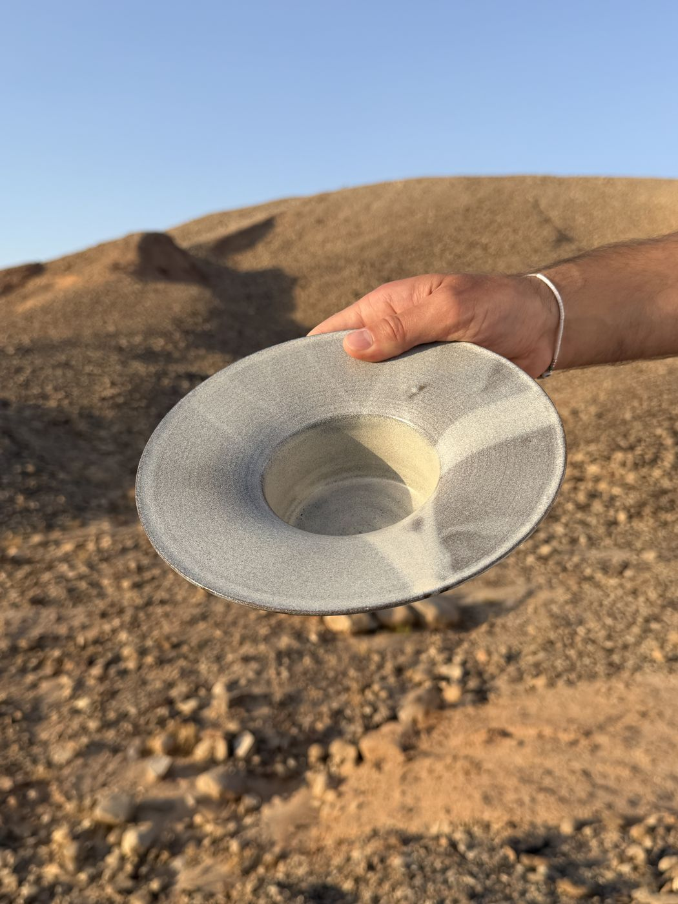
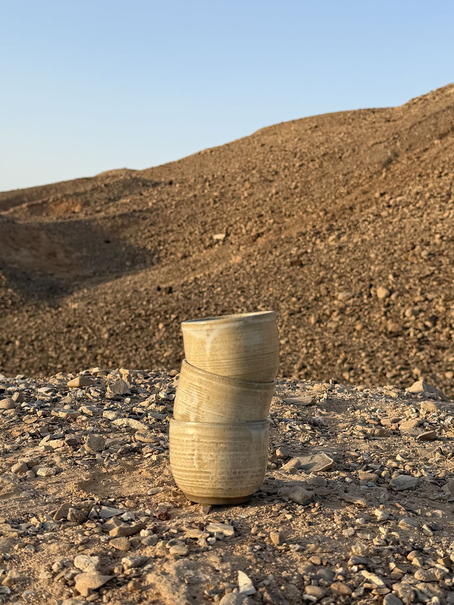
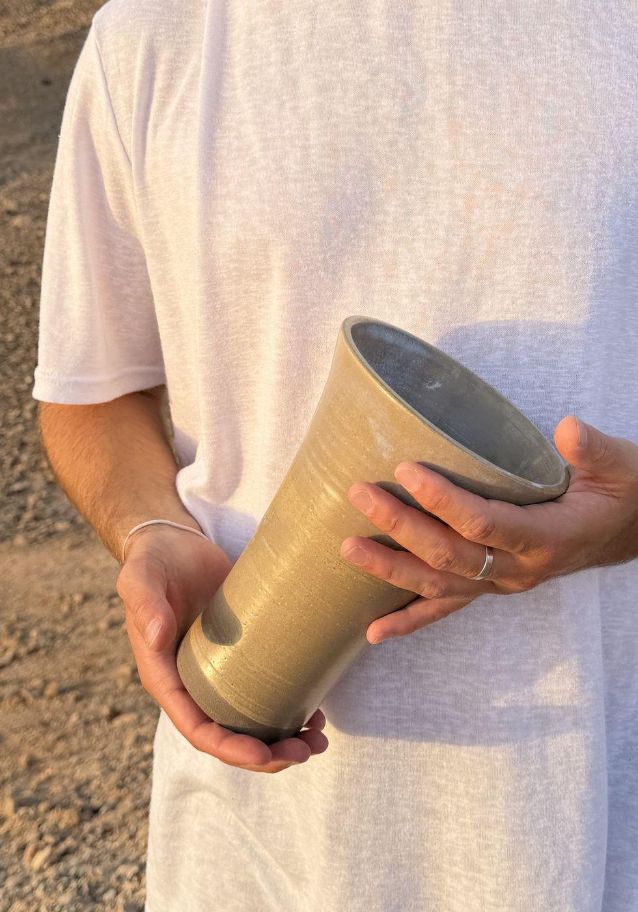
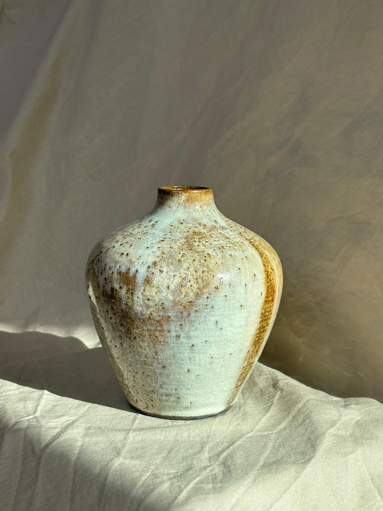
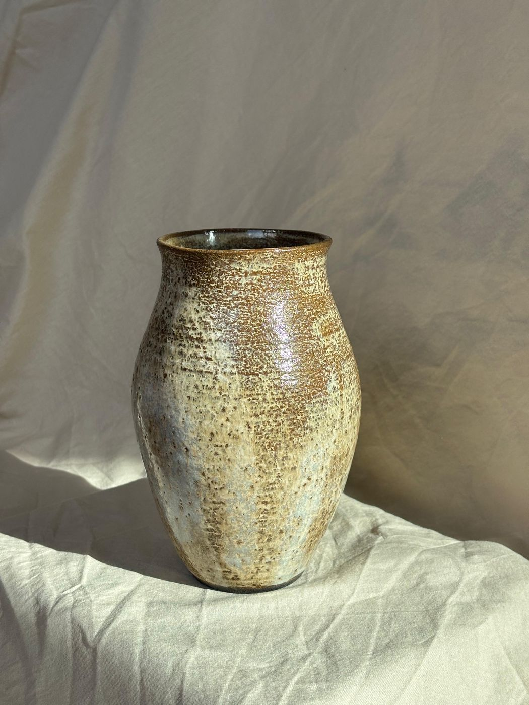

Maor, a UX/UI Designer with a background in graphic design. I recently wrapped up my UX/UI studies and I'm now on the hunt for my first role, bringing a designer's eye and a growing product mindset to the table.
What I bring: a graphic design foundation, freshly sharpened UX/UI skills, and a real hunger to learn fast and ship work that matters. I care about systems thinking, not just a pretty screen.
Outside of studying you'll find me trying new tools, doodling sketches, and testing how far AI can shorten my path without hurting quality.
I also throw pottery
Something about wheel throwing scratches the same itch as design — shaping something by hand until it feels right. Here's a few pieces, mostly photographed wherever the light was good that day.
Follow @mcf_ceramics on Instagram →






